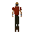
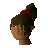
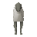
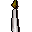
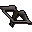

River Lum
Location at 3167, 3350 · Kingdom Of Misthalin
Open on the world map → Open in knowledge graph → Below: River Lum (underground)
NPCs
| NPC | Level | Spawns | Notable drops |
|---|---|---|---|
| 27 | 1 | ||
| 23 | 1 | ||
| 21 | 4 | Coins, Steel arrow, Iron dagger, Body talisman | |
| 20 | 2 | Coins, Nature rune, Chaos rune, Wizards hat | |
| 16 | 4 | Coins, Herb drop table, Bolt, Fishing bait | |
| 8 | 1 | Coins, Bronze axe, Chaos rune, Staff | |
| 7 | 9 | Coins, Staff, Nature rune, Chaos rune | |
| 7 | 4 | Coins, Herb drop table, Fishing bait, Bronze arrow | |
| 6 | 1 | ||
 Mugger | 6 | 2 | Rope, Herb drop table, Coins, Fishing bait |
| 5 | 1 | Coins, Water rune, Body rune, Goblin mail | |
| 2 | 7 | ||
| 2 | 1 | ||
| 2 | 4 | Bolt, Wizards hat, Hammer, Ball of wool | |
| 2 | 1 | ||
| 2 | 2 | Coins, Herb drop table, Bolt, Fishing bait | |
| 2 | 1 | Coins, Herb drop table, Bolt, Fishing bait | |
| 2 | 2 | Coins, Herb drop table, Bolt, Fishing bait | |
| 2 | 1 | Coins, Herb drop table, Bolt, Fishing bait | |
| 1 | 13 | Feather | |
| 1 | 24 | ||
| 1 | 20 | ||
| 1 | 1 | ||
| 1 | 1 | ||
| Apothecary | 1 | ||
| 1 | |||
| 1 | |||
 Katrine | 1 | ||
| shop | 1 | ||
 Sheep | 5 | ||
| 5 | |||
| shop | 1 | ||
| shop | 1 | ||
| 1 | |||
| 4 | |||
| shop | 1 |
Ground items

Lit candle x1
Phoenix crossbow x2